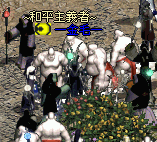

2002年6月5日
一金毛一成為香港伺服器首名Lv50法師

今天一金毛一終於成為香港伺服器首名Lv50法師，可以變身為巴風特及巴列斯！
另外有關香港伺服器首名惡魔騎士應為聖天，他比AE86trueno早一天Lv51呢！
以下為本網已知的香港太陽神伺服器Lv50+名單：
Lv51： 聖天（騎士） AE86trueno（騎士） 曼陀羅（騎士）
Lv50： CrazyLee（騎士） 獨劍行（騎士） 天劍絕刀2（騎士） StarKnight（騎士） 一金毛一（法師）
Copyright(C)1998-2003 Gabriel Leung. All Rights Reserved.